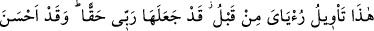
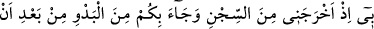
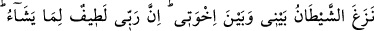
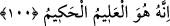

100. Ana babasını tahtın üstüne çıkardı ve hepsi onun için secdeye kapandılar.
Yûsuf dedi ki: “Ey babacığım! İşte önceden gördüğüm rüyanın yorumu budur.
Rabbim onu gerçekleştirdi. Doğrusu Rabbim bana (çok şey) lütfetti. Çünkü beni
zindandan çıkardı ve şeytan benimle kardeşlerimin arasını bozduktan sonra sizi
çölden getirdi. Şüphesiz ki Rabbim dilediğine lütfedicidir. Şüphesiz O çok iyi
bilendir, hikmet sahibidir.”
Mısır’a gelip konakladıklarında “ana babasını tahtın üstüne çıkardı.” Bu taht, Yûsuf
(a.s.)’ın oturduğu yüksekçe bir divandır
Yani, kardeşlerine yaptığından daha fazla bir ikramda bulunarak annesini ve babasını
başbakanlık tahtına kendi yanına oturttu. Böylece tüm akrabaları, Yûsuf (a.s.)’ın
ülkesine girme hususunda ortak olmalarına rağmen ona yakın olma konusunda farklı
oldular.
Yûsuf (a.s.)’a ezâ ve cefâ etmekten uzak olan ana babası onunla birlikte krallık tahtına
oturma konusunda diğerlerinden ayrıldılar. Yine gufrân-ı ilâhiye ulaştıklarında cennete
girme konusunda hepsi ortak olacaklar, fakat Allah’a yakınlık konusunda birbirinden
farklı olacaklar. Böylece bu yakınlığa ermek o gün eğrilik vasfı taşıyanlara değil
kalbleri saf ve duru olanlara mahsus olacaktır.
Herkes kendi yüksek himmetinden
Kendisine lâyık kumaş ve metâdan fayda görür
Mısır’a geldiklerinde Yâkub (a.s.)’ın âilesinin tamamı yetmiş iki erkek ve kadındı.
“Ve hepsi” babası, halası ve kardeşleri “onun için secdeye kapandılar.”
Yâni Yûsuf’u selâmlamak ve saygı göstermek üzere yere kapanarak secde ettiler.
Çünkü onların âdetine göre secde, selâmlama ve saygı gösterme anlamı taşıyordu. Tıpkı
insanların birbirlerine tâzim ve saygı göstermek maksadıyla ayağa kalkmayı, musâfaha
etmeyi, el öpmeyi ve benzerlerini âdet edinmeleri gibi.
Yûsuf (a.s.)’ın ebeveynini tahta çıkarması yere kapanmalarından sonra olmuştur.
Çünkü Yûsuf (a.s.) daha tahta oturmadan buluşmalarının başında ona secde etmişlerdir.
Çünkü selamlama vakti o zamandır. Ancak böyle olmasına rağmen Yûsuf (a.s.)’ın ana
babasına gösterdiği tâzimi vurgulamak için onları tahta çıkarması lafız bakımından öne
alınmıştır. Lafızların sırası (tertib-i zikrî) ise meydana geliş sırasının (tertib-i vukûî)
aynı olmasını gerektirmez. Bu hususun öne alınmasının bir sebebi de ‘rüyânın yorumu
olduğu’ açıklamasıyla onun bir arada olmasını sağlamaktır.